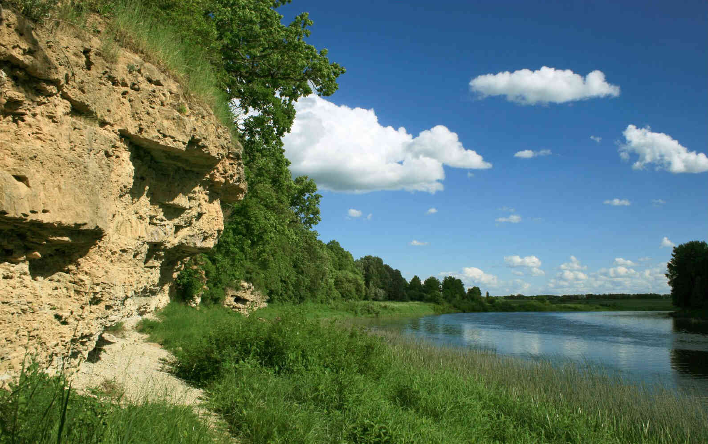
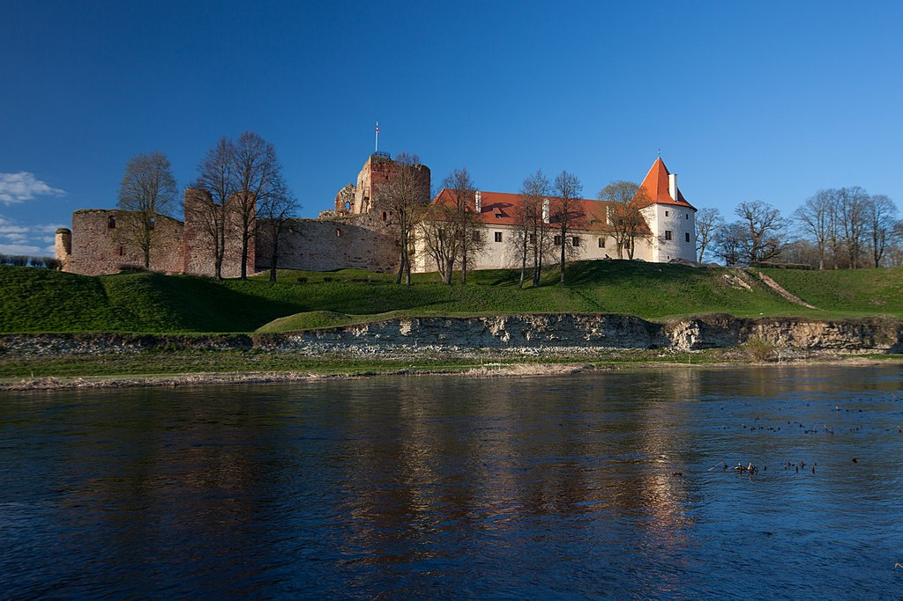

Bauskas dabas parks
Bauskas dabas parks ir paši aizsargājama dabas teritorija Bauskas novadā. Izvietojies Lielupes ielejā posmā no Bauskas līdz Mežotnei. Parks ir izcilas nozīmes piemērs Latvijas dabas ainavas daudzveidībai. Parks izceļas ar skaistiem panorāmas skatiem, pārgājiena takām un lauku ceļiem, un tas ir populārs galamērķis, kur cilvēki var baudīt pastaigas un piknikus, lai iepazītos ar dabas burvību. Tāpat tas piedāvā ideālas iespējas putnu vērošanai un sastapt dažādus dzīvniekus un augus.
Bauskas Dabas Parks sniedz iespēju atslābināties un izbaudīt klusumu un mieru, ko var piedāvāt dabas vidē, piemērotu gan ģimenes kopīgām izklaides aktivitātēm, gan individuālām pastaigām. Vēl viena priekšrocība ir tuvums Lielupes upes baseinam, kas atver dažādas iespējas ūdens aktivitātēm, ieskaitot kanoe braucienu un zveju.
 